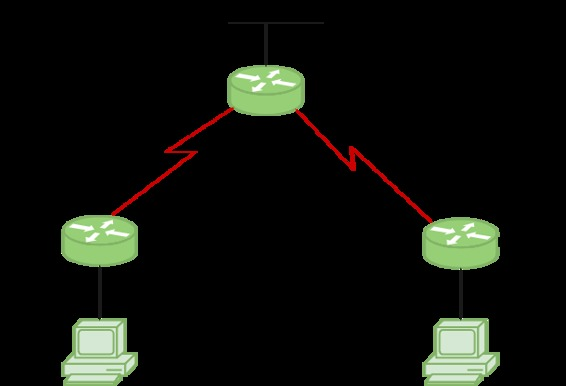

Routing Information Protocol (RIP) is a dynamic routing protocol which uses hop count as a routing metric to find the best path between the source and the destination network. It is a distance vector routing protocol which has AD value 120 and works on the application layer of OSI model. RIP uses port number 520.
Hop Count :
Hop count is the number of routers occurring in between the source and destination network. The path with the lowest hop count is considered as the best route to reach a network and therefore placed in the routing table. RIP prevents routing loops by limiting the number of hopes allowed in a path from source and destination. The maximum hop count allowed for RIP is 15 and hop count of 16 is considered as network unreachable.
Features of RIP :
1. Updates of the network are exchanged periodically.
2. Updates (routing information) are always broadcast.
3. Full routing tables are sent in updates.
4. Routers always trust on routing information received from neighbor routers. This is also known as Routing on rumours.
RIP versions :
There are three vesions of routing information protocol – RIP Version1, RIP Version2 and RIPng.
| RIP v1 | RIP v2 | RIPng |
|---|---|---|
| Sends update as broadcast | Sends update as multicast | Sends update as multicast |
| Broadcast at 255.255.255.255 | Multicast at 224.0.0.9 | Multicast at FF02::9 (RIPng can only run on IPv6 networks) |
| Doesn’t support authentication of update messages | Supports authentication of RIPv2 update messages | – |
| Classful routing protocol | Classless protocol, supports classful | Classless updates are sent |
RIP v1 is known as Classful Routing Protocol because it doesn’t send information of mask in its routing update.
RIP v2 is known as Classless Routing Protocol because it doesn’t send information of mask in its routing update.
>> Use debug command to get the details :
# debug ip rip>> Use this command to show all routes configured in router, say for router R1 :
R1# show ip route>> Use this command to show all protocols configured in router, say for router R1 :
R1# show ip protocols
Configuration :

Consider the above given topology which has 3-routers R1, R2, R3. R1 has IP address 172.16.10.6/30 on s0/0/1, 192.168.20.1/24 on fa0/0. R2 has IP address 172.16.10.2/30 on s0/0/0, 192.168.10.1/24 on fa0/0. R3 has IP address 172.16.10.5/30 on s0/1, 172.16.10.1/30 on s0/0, 10.10.10.1/24 on fa0/0.
Configure RIP for R1 :
R1(config)# router rip R1(config-router)# network 192.168.20.0 R1(config-router)# network 172.16.10.4 R1(config-router)# version 2 R1(config-router)# no auto-summary
Note : no auto-summary command disables the auto-summarisation. If we don’t select no auto-summary, then subnet mask will be considered as classful in Version 1.
Configureg RIP for R2 :
R2(config)# router rip R2(config-router)# network 192.168.10.0 R2(config-router)# network 172.16.10.0 R2(config-router)# version 2 R2(config-router)# no auto-summary
Similarly, Configure RIP for R3 :
R3(config)# router rip R3(config-router)# network 10.10.10.0 R3(config-router)# network 172.16.10.4 R3(config-router)# network 172.16.10.0 R3(config-router)# version 2 R3(config-router)# no auto-summary
RIP timers :
- Update timer : The default timing for routing information being exchanged by the routers operating RIP is 30 seconds. Using Update timer, the routers exchange their routing table periodically.
- Invalid timer: If no update comes until 180 seconds, then the destination router consider it as invalid. In this scenario, the destination router mark hop count as 16 for that router.
- Hold down timer : This is the time for which the router waits for neighbour router to respond. If the router isn’t able to respond within a given time then it is declared dead. It is 180 seconds by default.
- Flush time : It is the time after which the entry of the route will be flushed if it doesn’t respond within the flush time. It is 60 seconds by default. This timer starts after the route has been declared invalid and after 60 seconds i.e time will be 180 + 60 = 240 seconds.
Note that all these times are adjustable. Use this command to change the timers :
R1(config-router)# timers basic R1(config-router)# timers basic 20 80 80 90